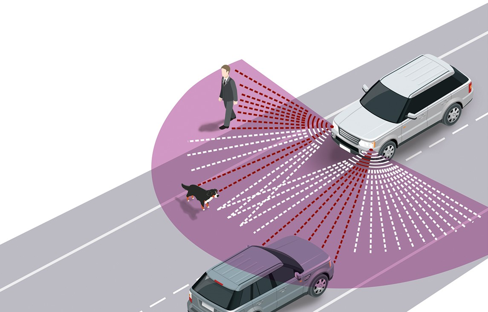
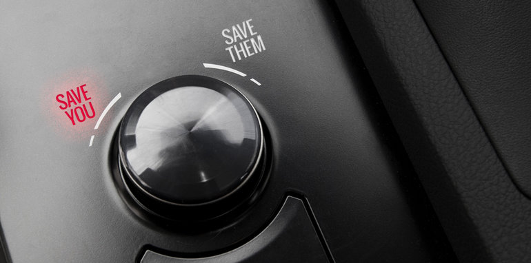

Ethical Scenarios
The Deer
Though difficult to quantify due to inconsistent and under-reporting, experts estimate that more than a million car accidents per year in the US are caused by deer. If a deer, or other object, randomly jumped in front of an autonomous car, what would that car decide to do and how? Would the car need to brake hard, or would moderate braking be sufficient? The decision to brake depends on road conditions and whether a tailgater (such as a big truck) is behind you, including its speed to determine the severity of a possible read-end collision.
What is the object? Is it an animal, a person, or something else? If it’s an animal, are some animals permissible to run over? Squirrels, maybe, but not larger animals, such as deer and cows. How do we determine if its permissible? What if that small animal was your pet dog or cat? If it could swerve and miss the animal, which way does it swerve – left or right? In the US and other nations in which drivers must stay on the right side of the road, some would say to drive off the road to the right, potentially into a ditch or a tree. However, this would likely harm the car and its passengers. The decision may also depend on the number of passengers. The decision to drive into an embankment seems different when only one adult driver is in the car than when several children are inside, too. On the other hand, turning to the left may mean driving into an opposite lane, potentially into a head-on collision. If unavoidable, which vehicle do we choose to crash into? How many people are involved?
In a real-world accident today, a human driver usually has neither the time nor the information needed to make the most ethical or least harmful decisions. They might oversteer into a ditch and to their own death drive or drive into oncoming traffic and kill a family. In both results, no forethought, malice, negligence, or bad intent was shown. However, autonomous cars do not operate under the sanctuary of reasonable instincts; they make potentially life-and-death decisions under no truly urgent time-constraint and therefore incur the responsibility of making better decisions than human drivers reacting reflexively in surprise situations. How do we program them to make such decisions? 5link.springer.com/content/pdf/10.1007%2F978-3-662-48847-8_4.pdf
Self-Sacrifice
To help solve ethical dilemmas, one of the first principles we might look for is consequentialism: that the right thing to do is whatever leads to the best results, especially in quantified terms. In our case, we should strive to minimize harm and maximize whatever it is that matters, such as, the number of happy lives.
In this thought-experiment, your future autonomous car is driving you on a narrow road, alongside a cliff. Suddenly, a school bus with 28 children appear around the corner, partially in your lane. Your car calculates that crash is imminent; given the velocities and distance, there is no possible action that can avoid harming you. What should your autonomous car do?
A consequentialist would want to optimize results, that is, maximize the number of happy lives and minimize harm. Assuming that all lives in this scenario are more or less equally happy—for instance, there’s no super-happy or super-depressed person, and no very important person who has unusual influence over the welfare of others—they would each count for about the same in our moral calculation. As you like, we may either ignore or account for the issue of whether there is extra value in the life of innocent child who has more years of happiness ahead of her than an average adult; that doesn’t matter much for this scenario.
The autonomous car’s two main choices seem to be: (1) to slam on the brakes and crash into the bus, risking everyone’s lives, or (2) to drive off the cliff, sparing the lives of everyone on the bus. If the odds of death to each person in the accident averaged more than one in 30, then colliding into the bus would yield the expected result of more than one death, up to all 30 persons. If driving off a cliff meant certain death, or the odds of one in one, then the expected result of that would be exactly one death (your own) and no more. Thus, the decision for the autonomous car—if all we care about is maximizing lives and minimizing deaths—is apparently to drive off the cliff and sacrifice the driver, since it is better that only one person should die rather than more than one.
Again, this situation would be entirely different if the car coming around the corner wasn’t a bus but another car with, let’s say, three passengers. If death would be minimized by striking the car instead of veering off the cliff, then that’d be the correct consequentialist choice. But, is consequentialism the correct ethical lens we look through for the future of autonomous cars? 5link.springer.com/content/pdf/10.1007%2F978-3-662-48847-8_4.pdf
Ducking Harm
Your autonomous car is stopped at an intersection and waits patiently as children cross in front of you. Your car detects a pickup truck quickly approaching from behind, about to cause a rear-end collision with you. The hit wouldn’t cause your death, but it’d surely injure you and damage the car. To avoid this harm, your car is programmed to dash out of the way if it can do so safely. In this case, your car can easily turn right at the intersection and avoid the rear-end collision. But, by doing so, it’d clear a path for the truck to continue through the intersection, seriously injuring some children and killing others.
Would this be the correct way to program an autonomous car? In most cases of an impending rear-end collision, probably yes. But, in this case, the design decision meant saving you from minor injury at the expense of serious injury and death of several children, and this hardly seems to be the right choice. Some may even say you (or the car) are responsible for their deaths: you (or the car) killed the children by removing an obstruction that would’ve prevented harm from falling upon them. Who would be liable? How do we program cars to have morals? 5link.springer.com/content/pdf/10.1007%2F978-3-662-48847-8_4.pdf